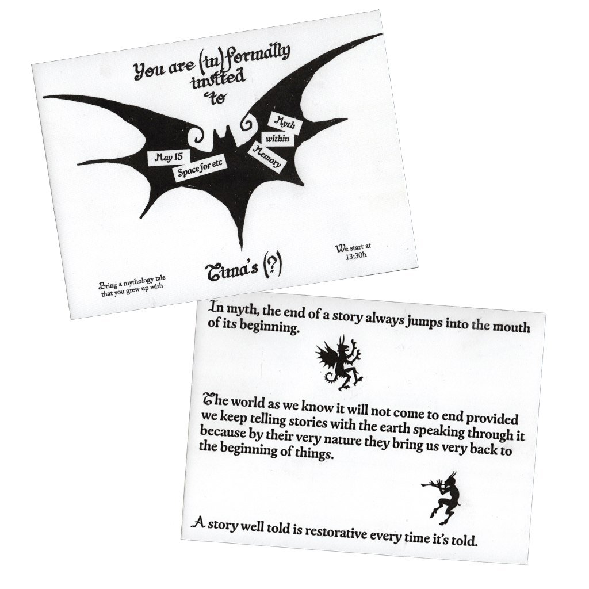
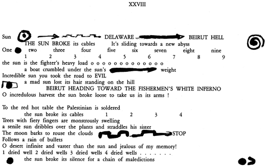
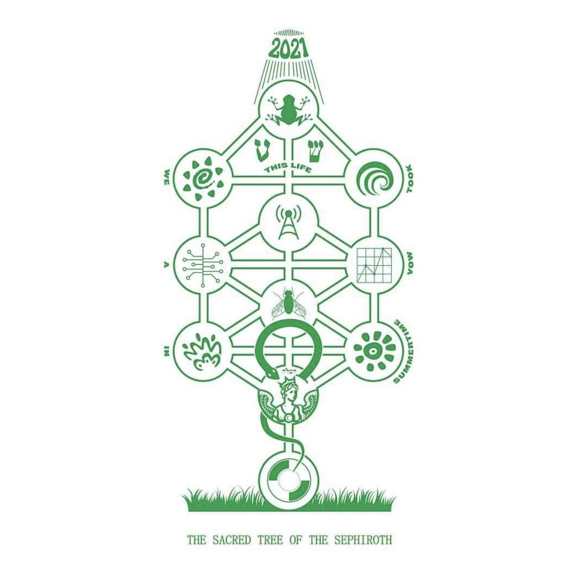
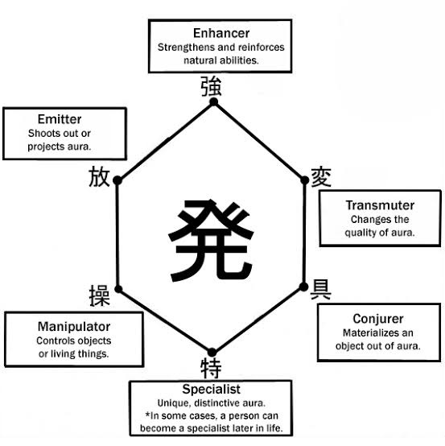
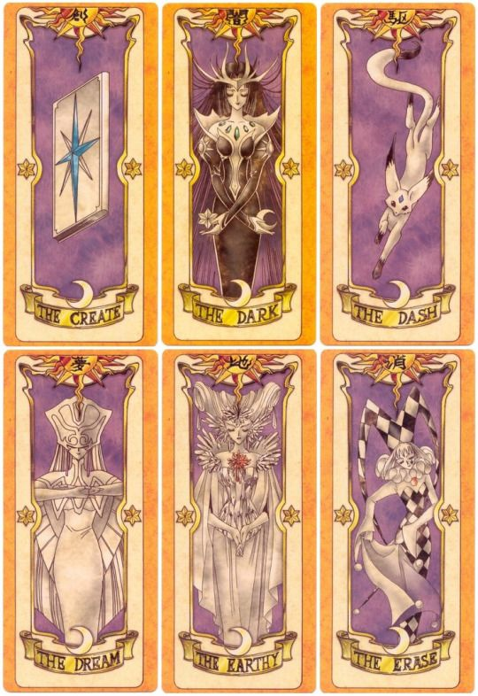
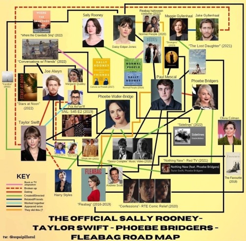
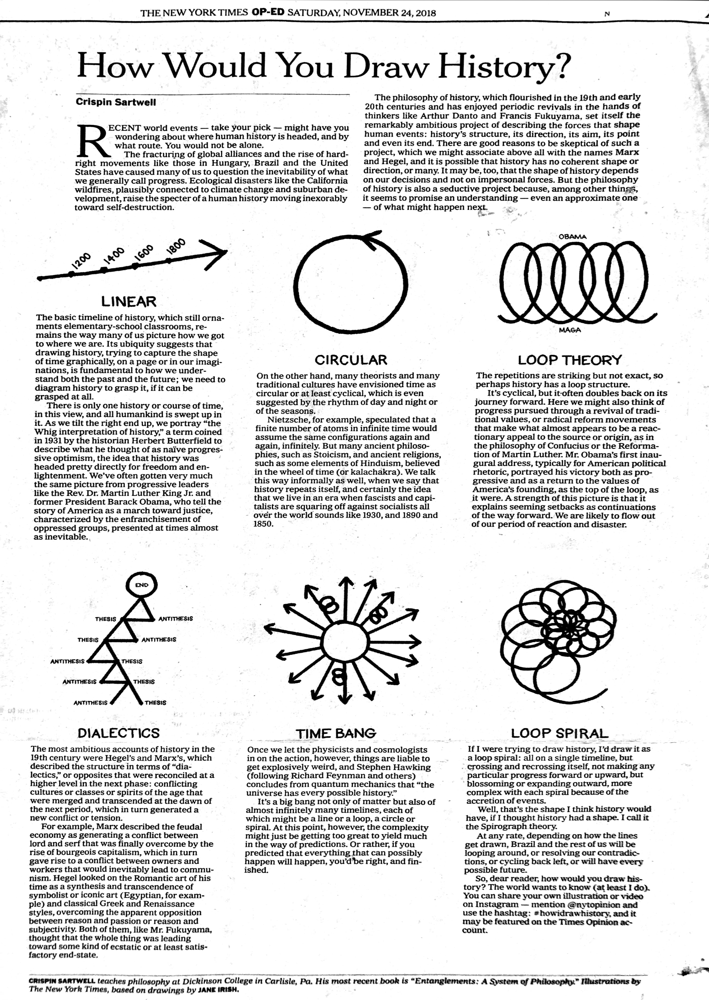
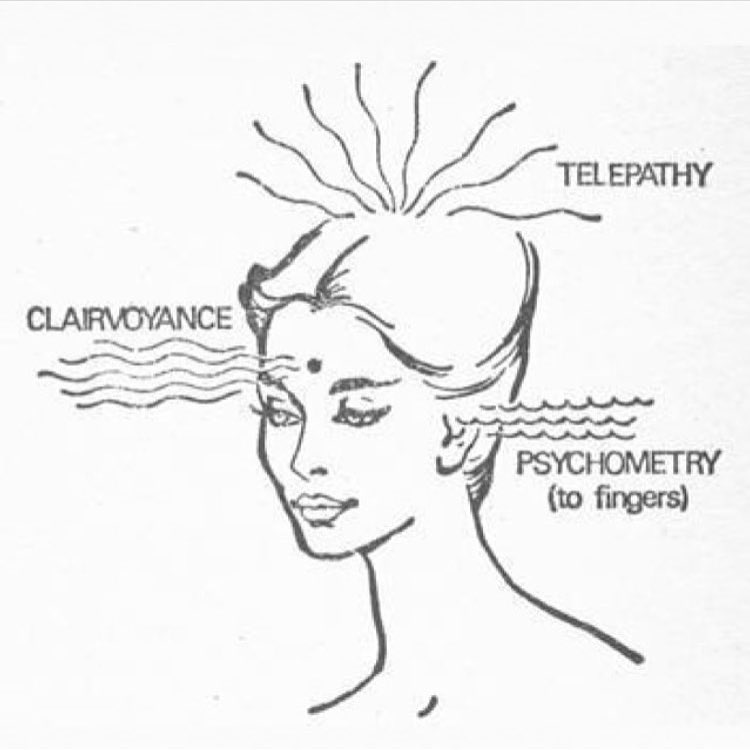
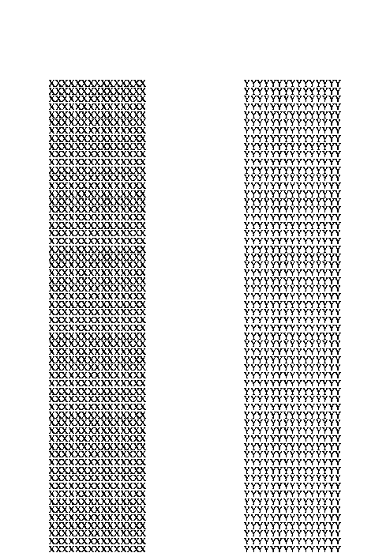

Memory (the deliberate act of remembering) is a form of willed creation. It is not an effort to find out the way it really was — that is research.
The point is to dwell on the way it appeared and why it appeared in that particular way.
(1)
I once knew a woman named Hannah Peace. I say knew, but nothing could be less accurate. I was perhaps four years old when she was in the town
where I lived. I don't know where or even if she is now, or to whom she was related then. She was not even a visiting friend.
I couldn't describe her in a way that would make her known in a photograph, nor would I recognize her if she walked into this room.
But I have a memory of her, and it's like this: the color of her skin - the mat quality of it.
Something purple around her. Also eyes not completely open. There emanated from her an aloofness that seemed to me kindly disposed.
But most of all I remember her name - or the way people pronounced it. Never Hannah or Miss Peace. Always Hannah Peace.
And more: something hidden - some awe perhaps, but certainly some forgiveness. When they pronounced her name they (the women and the men)
forgave her something.
(2)
The pieces (and only the pieces) are what begin the creative process for me.
And the process by which the recollections of these pieces coalesce into a part
(and knowing the difference between a piece and a part) is creation. Memory,
then, no matter how small the piece remembered, demands my respect, my
attention, and my trust.
(3)
I depend heavily on the ruse of memory (and in a way it does function as a creative writer's ruse) for two reasons.
One, because it ignites some process of invention, and two, because I cannot trust the literature and the sociology of
other people to help me know the truth of my own cultural sources. It also
prevents my preoccupations from descending into sociology.
(4)
There may be play and arbitrariness in the way memory surfaces, but none in the way the composition is organized,
especially when I hope to recreate play and arbitrariness in the way narrative events unfold. The form becomes
the exact interpretation of the idea the story is meant to express. There is nothing more traditional than that -
but the sources of the images are not the traditional novelistic or readerly ones.
(5)
My compact with the reader is not to reveal an already established reality
(literary or historical) that he or she and I agree upon beforehand. I don't
want to assume or exercise that kind ofauthority. I regard that as patronizing,
although many people regard it as safe and reassuring. And because my
metier is Black, the artistic demands of Black culture are such that I cannot
patronize, control, or pontificate. In the Third World cosmology as I perceive
it, reality is not already constituted by my literary predecessors in
Western culture. If my work is to confront a reality unlike that received
reality of the West, it must centralize and animate information discredited
by the West - discredited not because it is not true or useful or even of some
racial value, but because it is information held by discredited people, information
dismissed as "lore" or "gossip" or "magic" or "sentiment."
Toni Morrisson, Memory, Creation, and Writing
It would be hard to find a definition of myth that would be acceptable to all scholars
and at the same time intelligible to nonspecialists. Then, too, is it even possible to
find one definition that will cover all the types and functions of myths in all traditional
and archaic societies? Myth is an extremely complex cultural reality, which can be
approached and interpreted from various and complementary viewpoints.
(1)
Speaking for myself, the definition that seems least inadequate because most embracing is this:
Myth narrates a sacred history; it relates an event that took place in primordial time,
the fabled time of the "beginnings." In other words, myth tells how, through the deeds
of supernatural beings, a reality came into existence, be it the whole of reality,
the cosmos, or only a fragment of reality-an island, a species of plant, a particular
kind of human behavior, an institution. Myth, then, is always an account of a "creation";
it relates how something was produced, began to be. Myth tells only of that which really
happened, which manifested itself completely. The actors in myths are supernatural beings.
They are known primarily by what they did in the transcendent times of the "beginnings."
Hence myths disclose their creative activity and reveal the sacredness (or simply the "supernaturalness")
of their works. In short, myths describe the various and sometimes dramatic breakthroughs
of the sacred (or the "supernatural") into the World. It is this sudden breakthrough of
the sacred that really establishes the world and makes it what it is today.
Furthermore, it is as a result what makes man himself what he is today, a mortal, sexed, and cultural being.
(2)
In the twentieth century the scientific study of beginnings took a different direction.
For psychoanalysis, for example, the truly primordial is the "human primordial," earliest child hood.
The child lives in a mythical, paradisal time⁽¹⁾. Psychoanalysis developed techniques capable of showing us
the "beginnings" of our personal history, and especially of identifying the particular event that put
an end to the bliss of childhood and determined the future orientation of our life.
Restating this in terms of archaic thinking, one might say that there was once a 'paradise' (which for
psychoanalysis is the prenatal period, or the time before weaning), ending with a 'break' or 'catastrophe'
(the infantile trauma), and that whatever the adult's attitude may be toward these primordial circumstances,
they are none the less constitutive of his being."
¹ This is why the unconscious displays the structure of a private mythology.
We can go even further and say not only that the unconscious is "mythological"
but also that some of its contents carry cosmic values; in other words,
that they reflect the modalities, processes, and destiny of life and living matter.
It can even be said that modern man's only real contact with cosmic sacrality
is effected by the unconscious, whether in his dreams and his imaginative life
or in the creations that arise out of the unconscious (poetry, games, spectacles, etc.).
(3)
It is of interest to note that, of all the vital sciences, only psychoanalysis arrives at the idea
that the "beginnings" of every human being are blissful and constitute a sort of Paradise, whereas
the other vital sciences stress especially the precariousness and imperfection of the beginnings.
For them, it is process, becoming, evolution that gradually corrects the difficulty and poverty of the "beginnings."
Mircea Eliade, Myth and Reality, Translated from French by Willard R. Trask
For each of us, life begins in darkness. We have no recollection of the moment we were born.
We remember nothing at all of what happened to us before our birth.
We come into the world completely unaware, unprepared, and baffled.
What are we doing here? What is “here”? And who are we?
Through the years of our education, we are taught, not how to resolve these existential questions,
but a series of techniques with which we can cope with their insolubility.
These techniques, going under the general name of “knowledge” (scientific, technical, psychological, political, etc.),
consist in a series of powerful narratives through which we might be able to suspend our disbelief towards
our absurd existential condition: being “alive”, within a “body” and a “personality,” inside a “world,”
at a “time” and a “space,” all of whose actual material referents remain obscure.
(1)
By focusing our attention on these collective narratives, we can finally release ourselves
from the metaphysical and existential doubts that torment each of us in private.
We become able to identify ourselves with our own identity, and to reduce the world around
us to the linguistic labels that have been assigned to each of its parts.
(2)
But at times, as in our contemporary age, these narratives prove so effective,
that our suspension of disbelief begins to slide into actual belief in their absolute validity.
They cease being perceived as narratives, becoming instead “facts.” This ideological turn,
which appears to endow us with a firm grasp on the true “nature” of the world, affords a
great deal of tranquility. We cease questioning the unsettling mystery in which we are steeped,
and we cease tormenting ourselves about the limits of our understanding. But this tranquility
comes at a cost. It requires that we accept being imprisoned within the narratives with which
we have wrapped reality. Tranquility in exchange for freedom: the eternal dilemma.
(3)
Mythology approaches this situation from a different angle.
It has a gentle approach, which doesn’t question the legitimacy of the other discourses
with which we attempt to bridle the wild horse of reality. Indeed, as Santillana and Dechend claim,
it maintains a close connection with scientific knowledge. But, at the same time, it entertains a
close relationship with that unsettling abyss which other collective narratives attempt to relegate
at an unbridgeable distance.
(4)
Mythology is aware of being a form of narrative, rather than a set of factual truths,
and it is not ashamed of presenting itself as such—with all the flaws and contradictions
that befall fictions. Thus, in Ancient Egypt, it was possible to swap names and attributes
among the different divinities, including the Creator, with the unproblematic ease of a
modern writer dealing with the characters of their literary novel: Amun became Atum,
who became Ra, who became Ptah, while always remaining fundamentally the same god.
Names are only names, after all, while the true reality of existence (the secret name of each thing)
far exceeds the grasp of language. What counts is not the precision of a definition, but its effect.
(5)
Mythology is not a sealed system of knowledge. It is replete with contradictions,
and is constantly traversed by a movement between high and low, the cosmic and the mundane,
tragedy and comic relief. It mirrors the experience of life itself, with its absurd combinations
of eternity and time, knowledge and ignorance, impotence and freedom. It does not dismiss the
plight of living beings and their request for a system of sense that might rescue them from the
abyss of Chaos. Rather, it coats the raw kernel of reality with names, characters, stories,
all apparently endowed with a literal meaning. But it refrains from catering to this need by
neutralizing the mystery of reality, and thus imprisoning the world into a rigid catalogue of
definitions that present themselves as absolutely true, factual, and actual. Mythology remains
equidistant between the conceptual bridles with which we attempt to tame the Chaos of reality,
and the unsettling wildness that always teems beneath any inhabitable Cosmos (a universe that is,
etymologically, the space of “order” and “beauty”).
(6)
It is in this way that the soft, self-conscious narrative of mythology can be seen as an abstraction
and practical perfection of hard and “factual” forms of knowledge. Precisely in being fantastical—at
a mid-point between natural realism and supernatural silence—mythology offers a unique method to cope
with our deepest existential bafflement. Myths transform our existential doubts into skepsis: a double
enquiry into the senseless darkness which engulfs us and the imaginary light which we need to shed
around ourselves. It is a form of existential wisdom combined with abstract knowledge.
Federico Campagna, The Perfection of Mythology, e-flux Architecture
How is this related to graphic design?
I want to introduce a new archetype into our collection of tools as graphic designers:
(1) the wordbuilder
Graphic designer Tiger Dingsun says that worldbuilding involves developing systems of history, culture,
politics, magic, lore, knowledge, aesthetics, etc...
which form the substrate from which narratives can play out. A useful phrase here might be something like
‘meta-authorship’. An even more useful phrase might just be ‘creating a vibe.’
 Metaphors for substrate/substance relationships: fungus growing on a tree trunk
Metaphors for substrate/substance relationships: fungus growing on a tree trunk
Poetry involves creating substance — the poems themselves, or whatever unit of poetry one wishes —
out of a substrate that is based on the poet’s own personal world of interrelated symbols.
‘Creating something that embodies and implies a larger vibe.’ Reading poetry often involves a
degree of opaqueness, but you usually still get a sense of the poet’s inner world.
Can graphic designers do these things too? Be author and meta-author at the same time?
Think of this time spent together as a way to outline a methodology for graphic designers to think of
our practice as worldbuilding, and to consider the potentials and poetics that lie in such an endeavor.

Excerpt from Etel Adnan's The Arab Apocalypse
Poetry seeks to make new meaning through novel configurations of elements (words) from an already established system (language).
Graphic design, being related to the organization and presentation of information, can also be seen as making meaning through novel
configuration of various elements, which are not just limited to language and text, but also might include images, symbolic meaning,
and visual culture at large. Poetry, more so than other literatures, is concerned not only with the denotative meaning of words,
but also the meaning that arises from the aesthetic quality of words (things like sound symbolism, rhyme, meter).
In dealing with typography, graphic designers are also interested in both the denotative meaning and aesthetic qualities of a text
they are working with. Both have a playful relationship to structure, sometimes adhering to, and sometimes breaking, form.
However, one difference between a graphic designer’s and a poet’s oeuvre is that with each poem, insight is gained into the poet’s
symbolic world (semiosphere). Each poem provides additional context for the greater body of work by adding to the mythology of the
interiority of the poet. In contrast, it’s not so often that each poster that a graphic designer creates relates to some larger
world or story. Often the graphic designer’s interiority is purposefully veiled in order to not distract from the ‘actual’
content of the poster.
 Mythological chimera, a creature cobbled together from the DNA of various other worlds and organisms
Mythological chimera, a creature cobbled together from the DNA of various other worlds and organisms
But it’s extremely worthwhile for graphic designers to approach worldbuilding, because it allows for the potential for narratives
to sprawl out nonlinearly. It invites a reading without a prescribed goal of the text, (or image, or whatever the object of graphic design is).
Designing for multiple layers of meaning offers a point of resistance against graphic design’s primary function as lubricant for the smooth
flow of capital (be it economic, social, or otherwise), which relies on a singular, totalizing interpretation of the work/world.
I am interested in the attempt of creating a cosmology for my graphic design work.
There’s a relationship here to mythology. Both worldviews imply their own associations, symbolic meanings, and spatial configurations,
and conceptual relations. There’s an opportunity here to do comparative mythology, to mine the history
and culture of various aesthetic frameworks as inspiration for organizing content, and for developing one’s own visual language.

Art direction for Vampire Weekend's album Father of the Bride, featuring a re-interpreted Tree of Life

An explanation of the power system in the anime series Hunter x Hunter,
which is extremely specific to the world of the series, yet still based
in real-world historical ideas of 'aura' or 'qi'

Clow Cards from Card Captor Sakura based on tarot cards,
and also just the idea of using archetypes to develop taxonomies
(1) Prompt:
We will sit in a circle and each one of us will take turns retelling the mythology story of their choice.
We can have a group discussion around the stories, try to find overlaps and remember memories associated with the tales.
(2) Prompt:
We will use the sheets of paper provided to do a series of drawing/visualizing/organizing exercices.
While refering to the mythology tale of your choice, create your own library of personal symbols that you associate with the story.
Draw and assign each symbol with its own associated color, temperament, element, ruling planet, scent, musical genre, species of flower, etc.
Which symbols are weak against other symbols? which symbols harmonize and strengthen each other? which symbols negate each other?
which symbols dominate over others?
Overlay multiple systems of classification, and schemes that govern the world in your story or what you think are most relevant to you.
See how they interact.

Fan made fictional road map
(3) Prompt:
Make a list of your favorite words or phrases, that you would associate with the tale.
It can be a wording that you remember from how the story was told to you or something you come up with.
Map/graph out how all of those words relate to each other.
Make oppositions and alliances. Experiment with how these words would map onto other, existing structures.
(Ex: which words are calm, which are bad-tempered, melancholic, and optimistic?
Or, map the words onto a chart that classifies fragrances: which words smell floral to you? which smell woody?
which are musky? Or, which words are birds? which are reptiles? which are mammals? which are bugs? which are mushrooms?)

Crispin Sartwell, How Would You Draw History?
(4) Prompt:
Draw a a character, or letterform inspired by each element from your story or your previous diagrams.

Clairvoyance Telepathy Psychometry (to fingers) from You - Forever (1965)
(5) Prompt:
Gather around all the drawings. Each person will be assigned the task of describing the drawings of someone else.
Describe what the imagery on the sheets of paper communicates to you, what emotions it evokes to you, what the other person's
train of thought could have been, anything that seems relevant to bring up...
